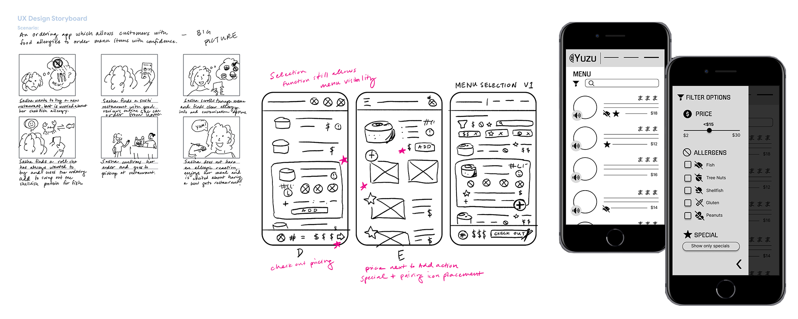

User Experience Design - Ideation and Prototyping
Developed as a practice project for Google's UX/UI Professional Certificate course, this custom ordering mobile user flow is designed to make ordering sushi as easy as possible, especially for customers with allergies. Designing the user experience required ideation and empathizing with potential users, as well as technical skills, such as creating lo-fidelity prototypes on paper and using Figma.

Usability studies yielded important insights on how to improve the user experience. Accessibility was key to the design: color contrast meets WCAG standrads, audio features read off menu items in the menu proper and the cart and icons were utilized wherever possible to indicate user actions.